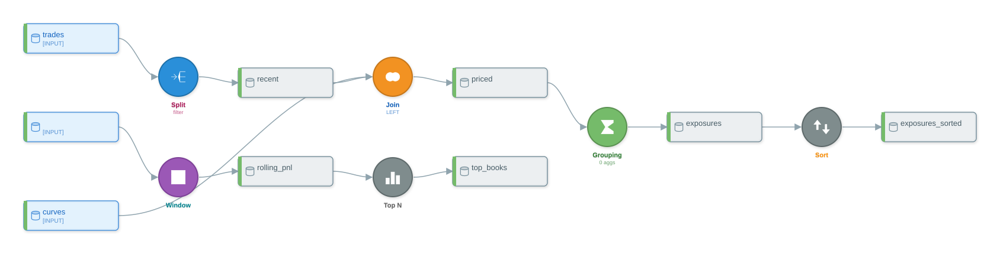

Worked Examples II — Position and P&L Analytics¶
What you'll learn¶
This chapter walks two end-to-end pandas-script-to-DataikuFlow conversions drawn from front-office commodity trading. The first builds a cross-commodity position-and-mark-to-market pipeline: a date filter, a curve JOIN, a GROUPING aggregation over (book, commodity, tenor), a 30-day rolling P&L WINDOW, and a TOP_N ranking — exercising filter routing, GREL split conditions, and the full get_summary → recipes → graph inspection sweep. The second is a real-time PJM LMP tick analytic that exercises WINDOW partition-and-order semantics, exposes a known rule-based-parser gap on chained groupby(...).rolling(...) idioms, and shows the manual-settings workaround. Each example renders in three formats so a reader can pick the visualization shape that fits their tooling.
Schemas¶
The two examples share three CSV schemas. The first example reads trades.csv (booking-system extract) and curves.csv (mark-to-market reference). The second reads pjm_lmps.csv (5-minute power LMP ticks).
trades.csv
trade_id, trader_id, trade_date, value_date, settlement_date,
counterparty_id, instrument, commodity, product_type,
notional, unit, price, currency,
buy_sell, book, portfolio, region, delivery_location, booked_at
curves.csv
as_of_date, commodity, tenor, delivery_location, currency,
mid_price, bid, ask, forward_date
pjm_lmps.csv
iso, node_id, node_name, zone, timestamp,
lmp, congestion, losses, energy_component
commodity is one of CRUDE, NATGAS, or POWER; tenor follows DSS forward-curve conventions (M+1, Q1, CAL26); node_id is a PJM pricing-node identifier; zone is a PJM zone like WESTERN HUB, AEP, or DOM. Both examples use only canonical front-office venues — PJM for power, Henry Hub / TTF for gas, WTI for crude.
Example 1 — Cross-commodity position MtM and exposure aggregation¶
The pipeline takes a booking-system trade extract, restricts it to current-year activity, joins each trade against the latest mark-to-market curve, derives a per-trade MtM value, aggregates exposure by (book, commodity, tenor), computes a 30-day rolling P&L per book, and keeps the 50 books with the largest absolute exposure. Twelve effective pandas assignments compile into six DSS recipes.
import pandas as pd
trades = pd.read_csv("trades.csv")
recent = trades[trades["trade_date"] >= "2024-01-01"]
curves = pd.read_csv("curves.csv")
priced = recent.merge(curves, on=["commodity", "tenor", "delivery_location"], how="left")
priced["mtm_value"] = (priced["mid_price"] - priced["price"]) * priced["notional"]
exposures = priced.groupby(["book", "commodity", "tenor"]).agg(
total_notional=("notional", "sum"),
total_mtm=("mtm_value", "sum"),
avg_price=("price", "mean"),
n_trades=("trade_id", "nunique"),
).reset_index()
exposures_sorted = exposures.sort_values(["book", "trade_date"])
rolling_pnl = (
exposures_sorted.groupby("book")["total_mtm"]
.rolling("30D", on="trade_date")
.sum()
.reset_index()
.rename(columns={"total_mtm": "rolling_30d_pnl"})
)
top_books = rolling_pnl.nlargest(50, "rolling_30d_pnl")
The script touches every primitive the DSS visual flow exposes for a desk-level P&L view: filter, multi-key join, multi-aggregation grouping, partitioned rolling window, and a row-reducing top-N rank.
Conversion¶
from py2dataiku import convert
source = """
import pandas as pd
trades = pd.read_csv(\"trades.csv\")
recent = trades[trades[\"trade_date\"] >= \"2024-01-01\"]
curves = pd.read_csv(\"curves.csv\")
priced = recent.merge(curves, on=[\"commodity\", \"tenor\", \"delivery_location\"], how=\"left\")
priced[\"mtm_value\"] = (priced[\"mid_price\"] - priced[\"price\"]) * priced[\"notional\"]
exposures = priced.groupby([\"book\", \"commodity\", \"tenor\"]).agg(
total_notional=(\"notional\", \"sum\"),
total_mtm=(\"mtm_value\", \"sum\"),
avg_price=(\"price\", \"mean\"),
n_trades=(\"trade_id\", \"nunique\"),
).reset_index()
exposures_sorted = exposures.sort_values([\"book\", \"trade_date\"])
rolling_pnl = (
exposures_sorted.groupby(\"book\")[\"total_mtm\"]
.rolling(\"30D\", on=\"trade_date\")
.sum()
.reset_index()
.rename(columns={\"total_mtm\": \"rolling_30d_pnl\"})
)
top_books = rolling_pnl.nlargest(50, \"rolling_30d_pnl\")
"""
flow = convert(source)
convert(...) is the rule-based entry point — same call shape Chapters 2 and 6 use.
Inspecting the flow¶
flow.get_summary() returns the count-by-type rollup:
Flow: converted_flow
Source: unknown
Generated: 2026-04-26T22:22:08.772859
Datasets: 9
- Input: 3
- Intermediate: 6
- Output: 0
Recipes: 6
- grouping: 1
- join: 1
- sort: 1
- split: 1
- topn: 1
- window: 1
Optimization Notes:
- split: 1 recipe(s)
- join: 1 recipe(s)
- grouping: 1 recipe(s)
- sort: 1 recipe(s)
- window: 1 recipe(s)
- topn: 1 recipe(s)
Six recipes for the twelve-line script. The breakdown maps cleanly onto the source: the >= boolean indexing on trade_date becomes a SPLIT, the multi-key merge(...) becomes a JOIN, the groupby(...).agg(...) becomes a GROUPING, the sort_values(...) becomes a SORT, the chained groupby(...).rolling(...).sum() becomes a WINDOW, and nlargest(...) becomes a TOP_N.
The mtm_value derivation does not appear in the recipe count. The line priced["mtm_value"] = (priced["mid_price"] - priced["price"]) * priced["notional"] is silently dropped on the rule-based path: derived-column assignments whose right-hand-side is a multi-column arithmetic expression on a JOINed dataset do not currently emit a PREPARE step. The LLM path in Chapter 7 captures it as a CreateColumnWithGREL step. For this rule-based shape the mtm_value column is referenced downstream by the GROUPING (total_mtm=("mtm_value", "sum")), so the produced flow imports cleanly into DSS but the reader of the flow has to add the MtM derivation as a single-step PREPARE between the JOIN and the GROUPING manually.
The recipe-type list reads off the same shape, in source-script order:
flow.graph.recipe_nodes returns the recipe nodes in topological order, wrapped as FlowNode instances:
['recipe:split_1', 'recipe:join_2', 'recipe:grouping_3', 'recipe:sort_4', 'recipe:window_5', 'recipe:topn_6']
Filter routing on the SPLIT¶
recent = trades[trades["trade_date"] >= "2024-01-01"] is a single-comparison boolean filter. Chapter 8 covers the routing rule: a numeric or date >= predicate becomes a SPLIT recipe with a GREL split_condition, not a FilterOnNumericRange processor inside a PREPARE. The rule-based parser emits SPLIT for any comparison whose left side is a column and whose right side is a literal — the result lives on recipe.split_condition as a GREL expression:
split = next(r for r in flow.recipes if r.recipe_type.value == "split")
print(split.split_condition)
The GREL form val("col") >= literal is what DSS evaluates at flow-run time. Compound conditions (e.g. df[(a > 5) & (b < 10)]) route to a FilterOnFormula processor inside a PREPARE; equality on a string column routes to FilterOnValue; this single-comparison form is the SPLIT case.
What the recipes contain¶
The JOIN carries the join type and the three-key join condition:
for r in flow.recipes:
if r.recipe_type.value == "join":
print(r.name, "join_type:", r.join_type.value)
print(" join_keys:", [(k.left_column, k.right_column) for k in r.join_keys])
join_2 join_type: LEFT
join_keys: [('commodity', 'commodity'), ('tenor', 'tenor'), ('delivery_location', 'delivery_location')]
how="left" translates to JoinType.LEFT; on=[...] produces three JoinKey instances with identical left and right columns. The DSS-canonical wire format stores joins as a list of {table1, table2, conditionsMode, joinType, conditions, outerJoinOnTheLeft} blocks (see dataiku-api-client-python: recipe.py for the canonical creator class).
The GROUPING carries the group keys but not the aggregation list on the rule-based path:
for r in flow.recipes:
if r.recipe_type.value == "grouping":
print(r.name, "group_keys:", r.group_keys)
print(" aggregations:", r.aggregations)
print(" settings: ", r.settings)
group_keys comes through cleanly; aggregations is empty because the rule-based parser detects the keys from the groupby(...) argument list but does not parse the .agg(...) keyword-tuple form into individual Aggregation entries. recipe.settings is None for the same reason — the typed GroupingSettings subclass is populated only when the analyzer can lift every aggregation into a structured form. The LLM path in Chapter 7 emits the full aggregation list with each Aggregation(column=..., function=..., alias=...) populated.
The WINDOW captures the rolling aggregation but not the partition or order:
for r in flow.recipes:
if r.recipe_type.value == "window":
print(r.name)
print(" partition_columns: ", r.partition_columns)
print(" order_columns: ", r.order_columns)
print(" window_aggregations:", r.window_aggregations)
print(" settings: ", r.settings)
window_5
partition_columns: []
order_columns: []
window_aggregations: [{'column': 'total_mtm', 'type': 'SUM', 'windowSize': '30D'}]
settings: None
The aggregation entry — SUM over total_mtm with windowSize='30D' — is captured. The partition (book) and the order (trade_date) are implicit in the chained groupby("book")["total_mtm"].rolling("30D", on="trade_date") expression and are not promoted onto the typed settings fields. This is the same gap that drives the WINDOW manual-fix in Example 2; the file:line reference is the same. WindowSettings (typed) is not populated for the same reason.
The TOP_N is the cleanest of the six:
for r in flow.recipes:
if r.recipe_type.value == "topn":
print(r.name, "top_n:", r.top_n, "ranking_column:", r.ranking_column)
nlargest(50, "rolling_30d_pnl") maps to TOP_N with top_n=50 and ranking_column="rolling_30d_pnl". TOP_N is the row-reducing dual of SORT (Chapter 6).
flow.optimization_notes records the per-type recipe counts; no merges fired on this flow because there is only one recipe of each type after the SPLIT:
['split: 1 recipe(s)', 'join: 1 recipe(s)', 'grouping: 1 recipe(s)',
'sort: 1 recipe(s)', 'window: 1 recipe(s)', 'topn: 1 recipe(s)']
Visualizations¶
The ASCII renderer fits in a terminal — 103 lines for this flow, with one block per recipe. The header is a banner line, then each input dataset appears in a box, the recipe nodes follow as labelled cards, and arrows connect them top-to-bottom. The trailing legend line is suppressed in the chapter excerpt because it contains rendering glyphs the textbook style does not allow inline; consumers who want the full art pipe flow.visualize(format="ascii") to a terminal directly:
The Mermaid renderer gives the same DAG with explicit fan-in and fan-out, suitable for committing to GitHub or rendering in Notion:
flowchart TD
subgraph inputs[Input Datasets]
D0[(trades)]
D2[(curves)]
D6[()]
end
D1[(recent)]
D3[(priced)]
D4[(exposures)]
D5[(exposures_sorted)]
D7[(rolling_pnl)]
D8[(top_books)]
R0{Split}
R1{Join\n(LEFT)}
R2{Grouping\n(0 aggs)}
R3{Sort}
R4{Window}
R5{Topn}
D0 --> R0
R0 --> D1
D1 --> R1
D2 --> R1
R1 --> D3
D3 --> R2
R2 --> D4
D4 --> R3
R3 --> D5
D6 --> R4
R4 --> D7
D7 --> R5
R5 --> D8
D6 is the empty-name placeholder dataset that the rule-based analyzer registers when it cannot resolve the input dataset for a chained pandas expression — the WINDOW (R4) consumes D6 rather than exposures_sorted because the .groupby(...).rolling(...).sum().reset_index().rename(...) chain is too long for the variable-name lineage tracker to follow. The LLM path closes the gap by tracking logical lineage instead of variable names.
The SVG renderer produces a Dataiku-style diagram suitable for documentation exports:
from pathlib import Path
svg = flow.visualize(format="svg")
Path("position-pnl-1.svg").write_text(svg, encoding="utf-8")

The rendered SVG colours dataset nodes by role (blue for inputs, grey for intermediates) and recipe nodes by recipe type. Reading top-to-bottom recovers the script's structural shape — and exposes the same WINDOW disconnect Mermaid surfaces: the WINDOW node has no upstream edge from exposures_sorted.
Example 2 — Real-time PJM LMP tick analytics¶
The second example is a 5-minute LMP tick analytic, the kind of flow a power-trading desk runs against the PJM real-time feed for intraday signal generation. The script sorts ticks by (node_id, timestamp), computes a 6-tick (30-minute) volume-weighted-average-price proxy per node, computes a 12-tick (1-hour) rolling volatility per node, and derives an intraday_pnl column relating the latest LMP to the 30-minute VWAP. Each computation is a per-node window function with the same partition (node_id) and the same order (timestamp).
import pandas as pd
ticks = pd.read_csv("pjm_lmps.csv")
ticks_sorted = ticks.sort_values(["node_id", "timestamp"])
ticks_vwap = (
ticks_sorted.groupby("node_id")["lmp"]
.rolling(6, on="timestamp")
.mean()
.reset_index()
.rename(columns={"lmp": "vwap_30min"})
)
ticks_vol = (
ticks_sorted.groupby("node_id")["lmp"]
.rolling(12, on="timestamp")
.std()
.reset_index()
.rename(columns={"lmp": "rolling_vol"})
)
Two windowed derivations on the same input. Both partition by node_id, both order by timestamp, both produce a derived column whose value depends on the window. The intraday_pnl = lmp - vwap_30min derivation is a pure element-wise GREL formula that lives in a single-step PREPARE — see the gap-handling note below.
Conversion¶
from py2dataiku import convert
source = """
import pandas as pd
ticks = pd.read_csv(\"pjm_lmps.csv\")
ticks_sorted = ticks.sort_values([\"node_id\", \"timestamp\"])
ticks_vwap = (
ticks_sorted.groupby(\"node_id\")[\"lmp\"]
.rolling(6, on=\"timestamp\")
.mean()
.reset_index()
.rename(columns={\"lmp\": \"vwap_30min\"})
)
ticks_vol = (
ticks_sorted.groupby(\"node_id\")[\"lmp\"]
.rolling(12, on=\"timestamp\")
.std()
.reset_index()
.rename(columns={\"lmp\": \"rolling_vol\"})
)
"""
flow = convert(source)
Inspecting the flow¶
Flow: converted_flow
Source: unknown
Generated: 2026-04-26T22:23:11.691915
Datasets: 4
- Input: 2
- Intermediate: 2
- Output: 0
Recipes: 2
- sort: 1
- window: 1
Optimization Notes:
- Merged WINDOW 'window_2' + 'window_3' -> 'window_merged_window_2'
- Removed orphaned intermediate dataset 'ticks_vwap'
- sort: 1 recipe(s)
- window: 1 recipe(s)
Two recipes for the four-line script. The optimizer merged the two adjacent WINDOW recipes — one for mean(6), one for std(12) — into window_merged_window_2, because both are WINDOWs reading the same input dataset; Chapter 10 covers the merge rule. The orphan-removal note shows the by-product: ticks_vwap becomes unreachable once the second WINDOW supersedes the first, and the optimizer prunes it.
sort_1: sort in=['ticks'] out=['ticks_sorted']
window_merged_window_2: window in=[''] out=['ticks_vol']
The SORT consumes ticks and produces ticks_sorted. The merged WINDOW lists an empty-string input — the same lineage gap Example 1 surfaced — and produces ticks_vol (the variable name of the second windowed assignment, kept by the optimizer's orphan-pruning step).
The WINDOW partition/order gap¶
Inspect the WINDOW recipe deeply:
for r in flow.recipes:
if r.recipe_type.value == "window":
print(r.name)
print(" partition_columns: ", r.partition_columns)
print(" order_columns: ", r.order_columns)
print(" window_aggregations:", r.window_aggregations)
print(" settings: ", r.settings)
window_merged_window_2
partition_columns: []
order_columns: []
window_aggregations: [{'column': 'lmp', 'type': 'MEAN', 'windowSize': 6}, {'column': 'lmp', 'type': 'STD', 'windowSize': 12}]
settings: None
window_aggregations captures both rolling computations. partition_columns and order_columns are empty — the chained groupby("node_id")[...].rolling(N, on="timestamp") form is the trigger, but the rule-based analyzer emits the WINDOW Transformation without lifting the partition key or the on= order column onto its parameters. The downstream flow generator faithfully forwards what it receives:
py2dataiku/parser/ast_analyzer.py:483-502 builds the ROLLING transformation;
parameters dict carries
{method, window_function, window, column}
but never partition_columns / order_columns.
py2dataiku/generators/flow_generator.py:714-715
reads partition_columns / order_columns
from trans.parameters with default [],
so the WINDOW recipe receives both as [].
The produced flow runs in DSS — the WINDOW recipe accepts an empty partition_columns and treats every row as one big partition, which is wrong for the per-node analytic. The export imports cleanly but the desk-trader needs to set the partition manually in the DSS UI. Three options for handling this in py-iku today:
- Use
convert_with_llm(Chapter 7) — the LLM analyzer reads thegroupby("node_id")chain and promotesnode_idontopartition_columnsdirectly. - Edit the produced flow in Python before exporting it (shown below).
- Restructure the source so the partition appears as an explicit
df.groupby("node_id").transform(...)call, which the rule-based pattern matcher does pick up — but this only works for fixed-size windows, notrolling(...).
The post-conversion Python fix uses the typed WindowSettings subclass directly:
from py2dataiku.models.recipe_settings import WindowSettings
window = next(r for r in flow.recipes if r.recipe_type.value == "window")
window.partition_columns = ["node_id"]
window.order_columns = ["timestamp"]
window.settings = WindowSettings(
partition_columns=["node_id"],
order_columns=["timestamp"],
aggregations=window.window_aggregations,
)
print("partition_columns:", window.partition_columns)
print("order_columns: ", window.order_columns)
print("settings: ", window.settings)
partition_columns: ['node_id']
order_columns: ['timestamp']
settings: WindowSettings(partition_columns=['node_id'], order_columns=['timestamp'], aggregations=[{'column': 'lmp', 'type': 'MEAN', 'windowSize': 6}, {'column': 'lmp', 'type': 'STD', 'windowSize': 12}])
Setting recipe.partition_columns, recipe.order_columns, and recipe.settings directly on the DataikuRecipe instance is supported public API — both attributes are dataclass fields exposed on the model. The exporters in py2dataiku.exporters honour both the bare list fields and the typed settings object on serialization.
intraday_pnl: the dropped GREL derivation¶
The script's final intent is intraday_pnl = lmp - vwap_30min. Two options:
- Append the derivation as a downstream pandas line after the WINDOW assignments. On the rule-based path the assignment is silently dropped — the same gap Example 1 surfaced for
mtm_value. - Add the PREPARE step manually after conversion, mirroring the manual fix above.
A minimal manual addition:
from py2dataiku import DataikuRecipe, RecipeType, ProcessorType, PrepareStep
pnl_step = PrepareStep(
processor_type=ProcessorType.CREATE_COLUMN_WITH_GREL,
params={"column": "intraday_pnl", "expression": 'val("lmp") - val("vwap_30min")'},
)
pnl_recipe = DataikuRecipe(
name="prepare_intraday_pnl",
recipe_type=RecipeType.PREPARE,
inputs=["ticks_vol"],
outputs=["ticks_pnl"],
steps=[pnl_step],
)
flow.add_recipe(pnl_recipe)
print([r.recipe_type.value for r in flow.recipes])
The added PREPARE carries one CreateColumnWithGREL step whose expression references the WINDOW's output column directly. The flow now serializes as a three-recipe chain with the GREL derivation explicit on the wire.
Predecessors and the graph¶
flow.graph.get_predecessors(...) resolves the upstream dependency for each recipe node:
The SORT consumes ticks. The WINDOW's predecessor is the empty-name placeholder — the same lineage gap surfaced by the recipe-level inspection. After the manual window.inputs = ["ticks_sorted"] fix and a re-render, flow.graph.get_predecessors("recipe:window_merged_window_2") returns ['ticks_sorted'] and the DAG closes cleanly.
Visualizations¶
The ASCII renderer reads top-to-bottom: a banner line, the ticks input dataset boxed at the top, an arrow into the SORT card, the ticks_sorted intermediate dataset boxed below, an arrow into the merged WINDOW card, and the ticks_vol output dataset at the bottom. The renderer does not include the empty-name placeholder dataset in the layout — it appears only in the Mermaid and PlantUML outputs. Pipe flow.visualize(format="ascii") directly to a terminal for the full art (the trailing legend line includes glyphs the textbook style does not reproduce inline).
The PlantUML renderer outputs a documentation-friendly diagram. The empty-name placeholder dataset is the source of an invalid as alias clause in PlantUML, so the cleanup step removes it before rendering:
@startuml
!theme plain
skinparam backgroundColor #FAFAFA
skinparam defaultFontName Arial
skinparam defaultFontSize 12
' Dataset styles
skinparam rectangle {
BackgroundColor<<input>> #E3F2FD
BorderColor<<input>> #4A90D9
FontColor<<input>> #1565C0
BackgroundColor<<output>> #E8F5E9
BorderColor<<output>> #43A047
FontColor<<output>> #2E7D32
BackgroundColor<<intermediate>> #ECEFF1
BorderColor<<intermediate>> #78909C
FontColor<<intermediate>> #455A64
}
' Datasets
rectangle "ticks" <<input>> as ticks
rectangle "ticks_sorted" <<intermediate>> as ticks_sorted
rectangle "ticks_vol" <<intermediate>> as ticks_vol
' Recipes
card "Sort" <<sort>> as recipe_0
card "Window" <<window>> as recipe_1
' Connections
ticks --> recipe_0
recipe_0 --> ticks_sorted
ticks_sorted --> recipe_1
recipe_1 --> ticks_vol
@enduml
The dataset-name cleanup plus the manual window.inputs = ["ticks_sorted"] fix produces the diagram above; without them PlantUML emits an empty alias (as) for the placeholder and refuses to render. The <<input>>, <<intermediate>>, <<output>> stereotypes drive node colouring at render time. (The skinparam blocks for recipe colours are abbreviated above for readability; the full output includes them.)
For an interactive view, the HTML renderer produces a self-contained page with the SVG embedded plus collapsible recipe-detail panels. The full HTML is checked in at assets/position-pnl-2.html. It is the format desk teams typically point browsers at when reviewing an LMP analytic before committing the recipe configs to DSS:
from pathlib import Path
html = flow.visualize(format="html")
Path("position-pnl-2.html").write_text(html, encoding="utf-8")
Notes carried over¶
The two examples expose two complementary points about analyzer choice on front-office flows. The position example produces a six-recipe shape from a plausible end-of-day P&L script; the recipe-by-recipe inspection cleanly recovers the join keys, the group keys, the rolling-window aggregation, and the top-N parameters. It also exposes two known gaps — the dropped MtM derivation, and the WINDOW input lineage — that the LLM path closes. The PJM tick example exposes the WINDOW partition/order gap directly and shows the manual-settings workaround end-to-end; partition columns and order_columns need either the semantic awareness the LLM analyzer brings or a post-conversion WindowSettings patch.
Both examples illustrate a property worth carrying: the produced flow's structural shape (recipe count, recipe types, edge set) is stable across runs and across analyzer paths — six recipes for the position script, two for the LMP script after the optimizer's WINDOW merge. The deep settings (partition_columns, aggregation lists, GREL expressions, derived-column PREPAREs) are where analyzer choice and pandas idiom matter, and the inspection sweep — get_summary → recipes → graph → typed settings — is the path to seeing exactly what was captured and what needs filling in.
Further reading¶
- Glossary — definitions for DSS, recipe, processor, dataset, JOIN, WINDOW, GREL, aggregation, partition, optimizer, lineage.
- Appendix C: Cheatsheet — one-page mapping reference covering
groupby + agg → GROUPING,groupby + rolling → WINDOW,nlargest → TOP_N, the GREL fall-through, and SPLIT vsFilterOn*routing. - Chapter 6: Recipe types tour — the running-example walk through GROUPING, JOIN, WINDOW, SORT, SPLIT, and TOP_N as algebraic primitives.
- Chapter 8: Filters and predicates — when a
df[cond]becomes a SPLIT recipe versus aFilterOn*processor; Example 1's>= "2024-01-01"filter is the canonical SPLIT case. - Chapter 10: Optimization and the DAG — the WINDOW-merge rule that fires on Example 2 and the orphan-pruning step that follows.
- Notebook 02 — Intermediate — runnable analytics conversions parallel to the examples in this chapter.
What's next¶
Chapter 3's anatomy walkthrough and Chapter 7's LLM-path tour together show how to close the partition/order gap and the dropped-derivation gap surfaced here.